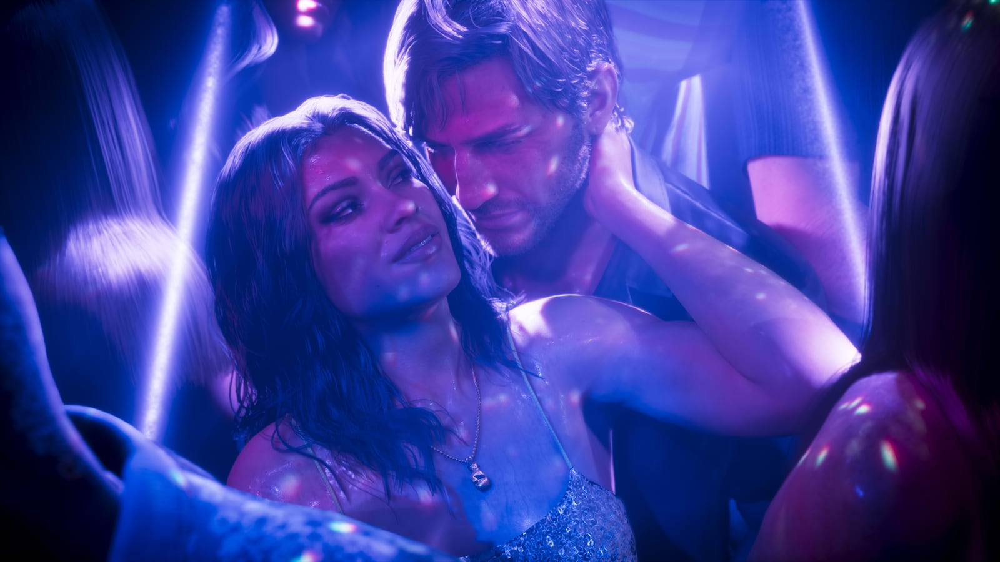
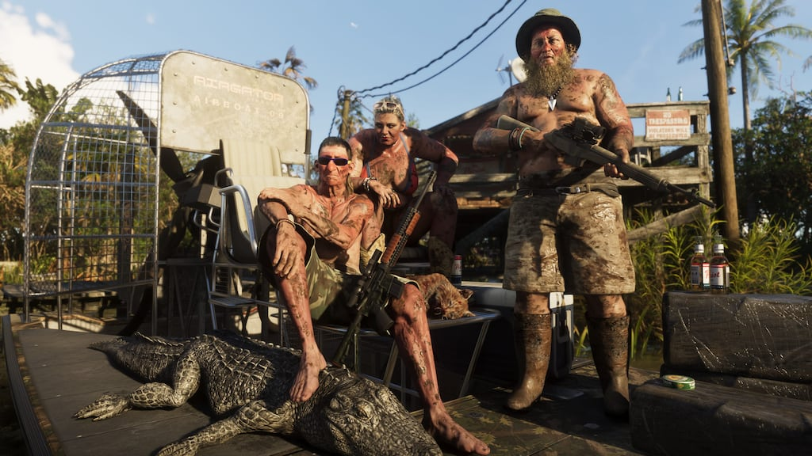
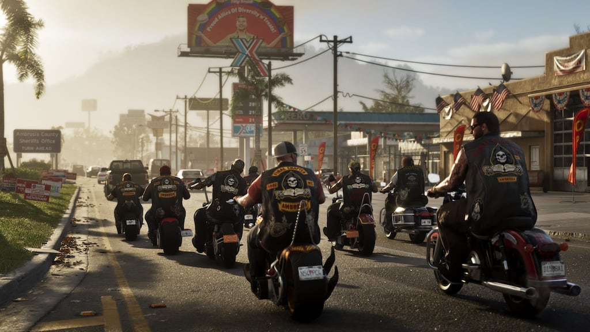
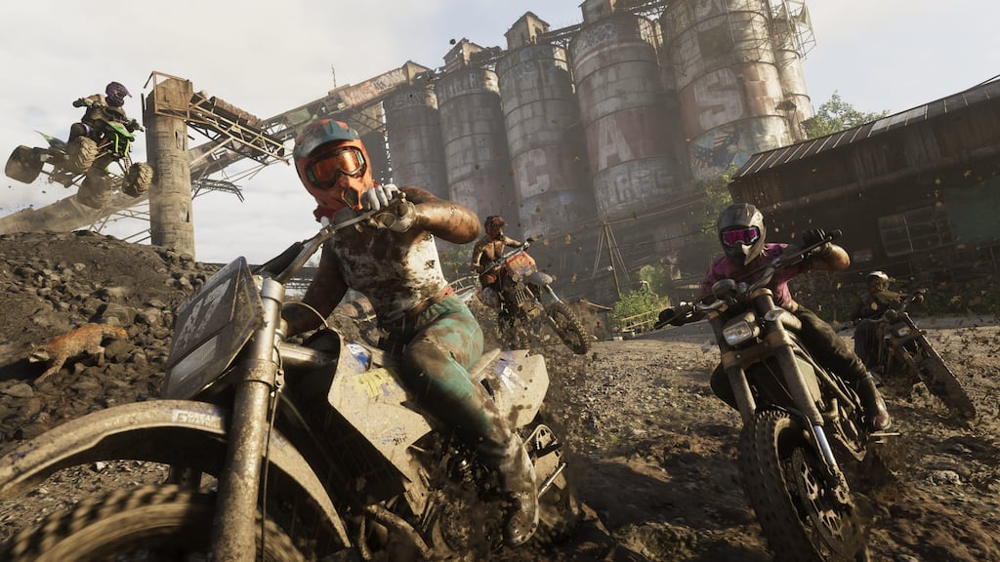
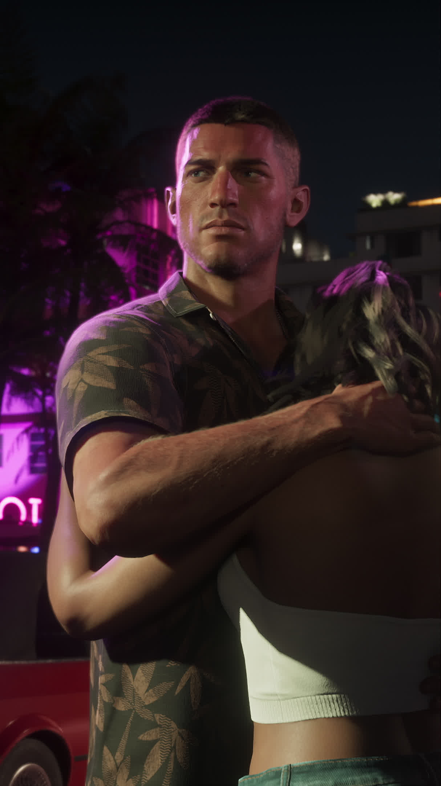

01 / LEONIDA
01 / LEONIDALuzes e litoral
Vice City
Vice City em um dos registros da galeria oficial de GTA VI.
Conhecer o destino
O neon acende. A comunidade se encontra. Personagens, cenários, guias e tudo o que movimenta o universo de GTA VI, em um só lugar.
Portal brasileiro independente de fãs.
Data anunciada: .
Referência: 19/11, à 0h de Brasília (UTC−3). O horário de liberação não está confirmado nesta contagem. Ver anúncio oficial →
Grand Theft Auto VI acompanha Jason e Lucia em Leonida. Um plano que dá errado coloca os dois em uma trama criminosa que atravessa o estado.
Comece pela história, conheça os rostos e descubra os cenários. Depois, encontre outros jogadores para trocar ideias.
Abrir o guia essencialSinopse, data e plataformas: Rockstar Games. Informações consultadas em 14/11/2026.
Seis destinos apresentados na galeria oficial. Escolha um lugar e veja os registros que dão forma ao novo mundo de Grand Theft Auto.
01 / LEONIDAVice City em um dos registros da galeria oficial de GTA VI.
Conhecer o destino 02 / LEONIDA
02 / LEONIDAIlhas, água e estradas costeiras nos registros oficiais.
Conhecer o destino 03 / LEONIDA
03 / LEONIDAUm dos cenários identificados na galeria de Leonida.
Conhecer o destino
04 / LEONIDAVegetação e áreas alagadas contrastam com os cenários urbanos.
Conhecer o destino
05 / LEONIDAOutra região apresentada na coleção oficial de imagens.
Conhecer o destino
06 / LEONIDAPaisagens naturais do Mount Kalaga National Park na galeria oficial.
Conhecer o destinoImagens e nomes de locais: galeria oficial da Rockstar Games. Os textos descrevem a seleção visual apresentada, sem estimar o tamanho do mapa.
Navegue por seis regiões divulgadas, filtre os cenários e abra as imagens oficiais em um explorador interativo.
Mapa ilustrativo: posições, distâncias e contornos não representam a geografia do jogo.
Abrir mapa interativo →Uma descoberta vira teoria. Uma dúvida vira guia. Reúna suas ideias com a comunidade e acompanhe o que os canais oficiais apresentam sobre GTA VI.
Novidades oficiais →Conheça Lucia e Jason: o passado, as conexões e os caminhos que se cruzam em Leonida.

Depois de sair da prisão em Leonida, Lucia quer mudar de vida e transformar seus planos em realidade.
Seu pai a ensinou a lutar desde pequena. Uma tentativa de proteger a família a levou à prisão. Agora, ela busca a vida melhor que sua mãe desejava desde Liberty City — e vê em Jason uma possível saída.

Jason procura uma vida tranquila, mas seu caminho nas Keys o mantém próximo de negócios perigosos.
Criado perto de golpistas e criminosos, passou pelo Exército antes de trabalhar para traficantes locais nas Keys. Encontrar Lucia pode mudar seu rumo, embora ele ainda não saiba onde essa parceria vai levá-lo.
Imagens: Rockstar Games. Perfis resumidos a partir das apresentações oficiais dos personagens.
Amigo de Jason nas Keys.
Empresário ligado à Only Raw Records.
Ambições na indústria da música.
Duo de Bae-Luxe e Roxy.
Experiência em assaltos a bancos.
Negócios de contrabando nas Keys.
Apresentações resumidas a partir de People & Places da Rockstar Games.
Uma seleção editorial de publicações da Rockstar para acompanhar o jogo direto da fonte.
O Newswire reúne os detalhes do pré-carregamento de GTA VI. Confira as orientações diretamente na publicação oficial.
Ler na RockstarA galeria de lançamento reúne novos registros do jogo. Explore a seleção visual divulgada pela Rockstar.
Ler na RockstarMais um material oficial para acompanhar Jason, Lucia e o universo de Leonida. Assista no canal da desenvolvedora.
Ler na RockstarSeleção consultada em 14/11/2026. As atualizações são revisadas editorialmente.
Selecione uma miniatura para assistir aos trailers oficiais da Rockstar Games no YouTube.
Conheça mais sobre Jason, Lucia e o universo de Leonida.
Assistir no YouTube →O primeiro vislumbre de Vice City e do estado de Leonida.
Assistir no YouTube →A biblioteca da Rockstar também apresenta o trailer de lançamento, An Extended Look, o vídeo de pré-carregamento e clipes dos personagens.
Explorar todos os vídeos →Escolha seu apelido, abra uma conversa e marque seu progresso. A história é do jogo. A comunidade é nossa.